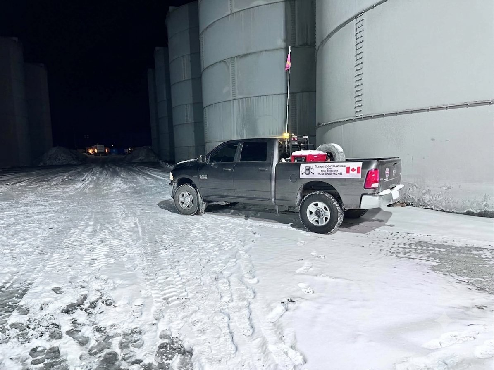
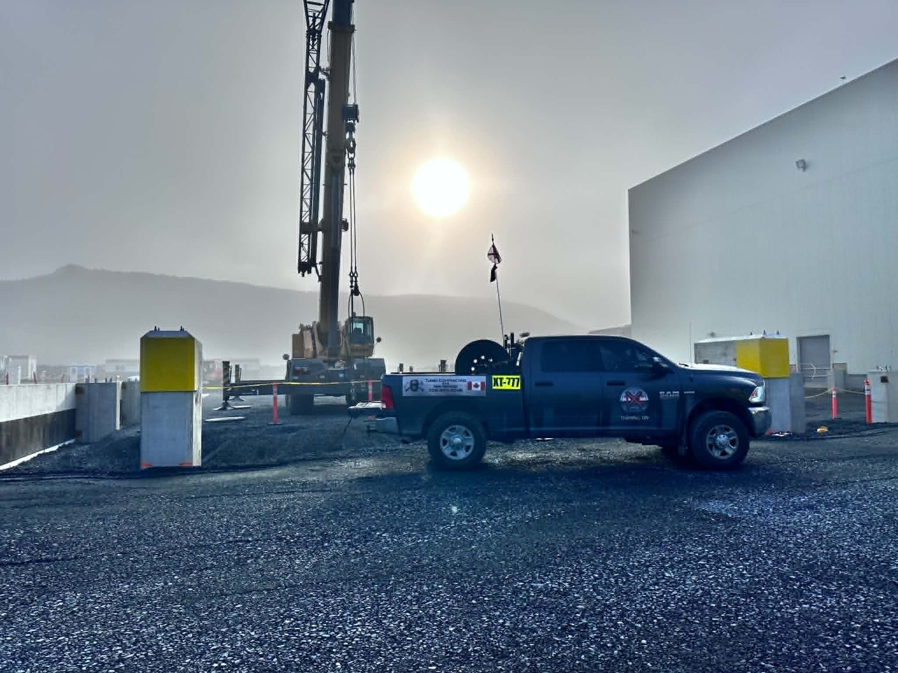
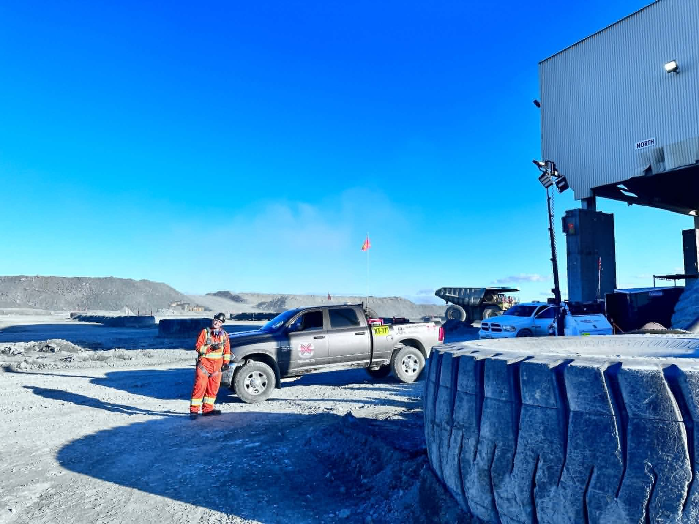
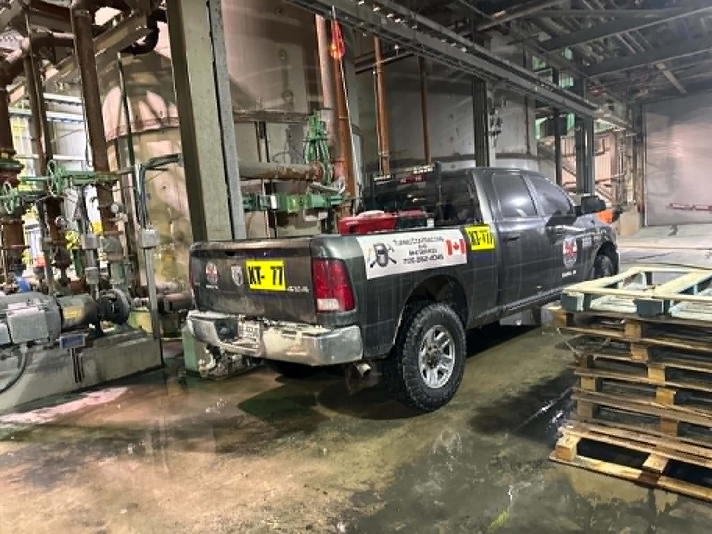
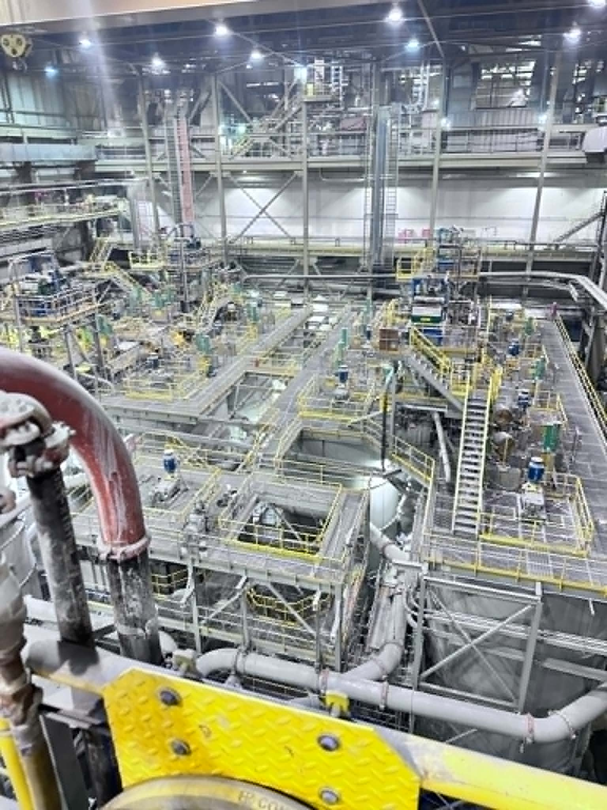
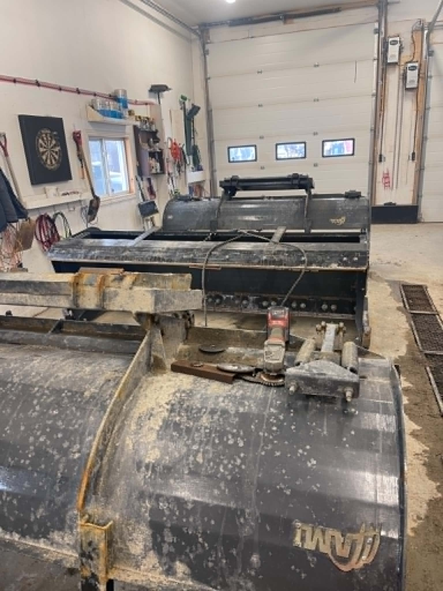

Licensed & Insured · All Work In-House
Services
Twelve-plus service categories built for mining and industrial operations across Northern Ontario: millwright, welding, painting, surface and underground construction, hoisting, rigging, confined space, pipe fitting and grooving, road building, and more. All performed in-house by our own tradespeople.
Industrial Millwright & Mill Maintenance
Turbo Contracting's millwright and mill support services cover the complete scope of industrial mechanical work — from new machinery installation through precision alignment and ongoing mill maintenance. Our millwrights have hands-on experience in mining, manufacturing, and processing environments across Northern Ontario.
We approach every installation with alignment-first discipline. Getting machinery square, level, and precisely aligned before commissioning eliminates vibration problems, premature bearing failure, and unplanned downtime down the line.
- Machinery installation and commissioning to manufacturer specification
- Precision shaft and laser alignment on couplings and drive trains
- Dynamic balancing of rotating components
- Bearing replacement, inspection, and fitting
- Belt drive and chain drive installation and tensioning
- Mill maintenance programs and ongoing mill support
- Gearbox and reducer inspection, rebuild, and reassembly


Welding & Fabrication
Our certified welders handle structural, mechanical, and process welding across a wide range of materials and environments. From shop fabrication to field welding in demanding industrial settings, we deliver weld quality that meets code requirements and stands up to the conditions your operations demand.
- MIG (GMAW) and TIG (GTAW) welding on structural and process applications
- Structural steel welding — beams, columns, frames, and supports
- Field welding for repairs, modifications, and new installations
- Custom steel fabrication to drawing or specification
- Pipe welding — carbon steel, stainless, and alloy materials
- Weld repairs and overlay on worn or damaged components


Industrial Painting & Coatings
Turbo Contracting handles industrial painting and protective coating work for mining and heavy industrial assets across Northern Ontario. Proper surface preparation and the right coating system are what determine whether a finish lasts a season or a decade on a mine site.
We work on heavy equipment, trailers, structural steel, tanks, vessels, and piping at active mine sites and industrial facilities, applying durable coating systems built for harsh Northern Ontario conditions.
- Industrial paint application on heavy equipment and structural steel
- Corrosion protection coating systems for mine-site environments
- Tank, vessel, and piping exterior coating
- Equipment repainting and touch-up programs
- Trailer and vehicle finishing at mine sites and yards
- Mine site surface and structure painting programs


Surface Construction
Turbo Contracting performs surface construction work at mining and industrial sites across Northern Ontario. Whether it's structural work, site improvements, or support infrastructure, our crews have the experience and equipment to handle challenging northern terrain and conditions.
- Structural steel erection and installation
- Site infrastructure and support building construction
- Concrete formwork and placement
- Equipment pad and foundation work
- Stairs, walkways, and access structure installation
- Industrial facility modifications and additions

Underground Construction
Working underground requires a different level of preparation, certification, and situational awareness. Our crews are trained and certified for underground environments and bring the discipline that subsurface work demands.
Turbo Contracting supports underground mining operations with construction, installation, and mechanical services at depth. We understand the protocols, the communication requirements, and the safety standards that govern underground work.
- Underground mechanical installation and construction
- Bulkhead and support structure installation
- Piping and electrical conduit installation underground
- Equipment installation in headframe and underground areas
- Underground maintenance and repair work
- Coordination with mine site safety and operations teams
Confined Space Work & Confined Space Watch
Confined space entry requires specific certification, equipment, and a properly trained attendant on stand-by at all times. Turbo Contracting provides both the entry workers and the confined space watch function, keeping your project compliant and your people safe.
Our confined space capabilities cover tanks, vessels, silos, tunnels, and any other permit-required confined space on your site, with all required atmospheric testing, PPE, and emergency retrieval equipment in place.
- Confined space entry for mechanical work, inspection, and cleaning
- Confined space attendant / watch service
- Atmospheric gas monitoring and testing
- Emergency retrieval equipment and rescue plan in place
- Entry permit preparation and hazard identification
- Tank, vessel, silo, and pit entry work
Working at Heights
Elevated work requires certified workers, proper fall protection equipment, and a rescue plan in place before anyone leaves the ground. Turbo Contracting's crew holds working at heights certification and brings the equipment and planning discipline to execute elevated scopes safely.
- Elevated installation and construction work
- Fall protection system inspection and setup
- Rope access and elevated maintenance work
- Headframe, conveyor, and elevated structure work
- Aerial work platform operation
- Rescue plan development and emergency preparedness
Hoisting & Rigging
Moving heavy equipment and structural components in an industrial or mining environment requires trained riggers, proper lift planning, and the right hardware. Turbo Contracting holds hoisting and rigging certification and handles critical lifts on site safely and to plan.
- Certified rigging for heavy equipment moves
- Lift planning for critical and complex picks
- Sling, shackle, and hardware inspection and setup
- Crane communication and ground rigging
- Equipment placement and alignment after lift
- Underground hoist and shaft work coordination
Exploration & Work Camp Set Up
Getting an exploration program or remote project off the ground in Northern Ontario requires logistics experience, bush knowledge, and crews who can work in remote conditions with minimal support infrastructure. Turbo Contracting has done it.
We handle the physical set-up of work camps, exploration support infrastructure, and site preparation to get your program operational quickly in remote Northern Ontario locations.
- Work camp assembly and set-up at remote sites
- Exploration support infrastructure installation
- Temporary power, water, and site services set-up
- Trailer positioning and levelling
- Site clearing and access road preparation
- Demobilization and site restoration


Core Farms & Core Farm Relocation
Core farms are the backbone of a drilling program. They need to be set up correctly, maintained in order, and moved efficiently when a program relocates. Turbo Contracting handles core farm construction, organization, and full relocation services for exploration and mining operations.
- Core farm construction and racking set-up
- Core box handling, organizing, and labelling support
- Core farm relocation to new program locations
- Core storage facility set-up and levelling
- Loading, transport coordination, and off-loading
- Site clean-up and restoration after relocation
Road Building
Access roads in Northern Ontario need to be built for year-round use, variable terrain, and heavy equipment loads. Turbo Contracting builds site access roads, haul roads, and internal mine site roads to handle the demands of Northern Ontario bush terrain and heavy equipment loads.
- Site access road construction and grading
- Haul road construction for heavy equipment
- Culvert installation and water management
- Road base preparation and compaction
- Internal mine site road construction
- Road maintenance and seasonal repair
Pipe Fitting, Grooving & Installation (2–24 inch)
Turbo Contracting provides pipe fitting, grooving, and installation for steel pipe from 2 to 24 inches, as well as poly pipe and process piping at mining and industrial sites across Northern Ontario. Our pipe fitters and certified tradespeople handle complete piping systems — from layout and fabrication to installation, support, and commissioning — in both surface and underground environments.
- Pipe fitting — layout, cut, fit, and installation of piping systems
- Steel pipe grooving — 2 to 24 inch diameter
- Grooved coupling and fitting installation (Victaulic-type systems)
- Poly (HDPE) pipe installation for water and utility service
- Process piping installation and support systems
- Pipe hangers, supports, and anchoring
- Valve, flange, and specialty fitting installation
- Pressure testing and system commissioning
Shutdown & Turnaround Support
Plant shutdowns compress months of deferred maintenance into a narrow window. Turbo Contracting brings the tradespeople, the planning experience, and the field discipline to execute your shutdown scope on time without compromising quality or safety.
We integrate with your shutdown coordination team, work to your schedule, and handle our scope completely in-house. No subcontract surprises, no third-party coordination gaps. Accountable execution from start to post-shutdown verification.
- Rapid mobilization for scheduled and emergency shutdowns
- Shutdown scope review and trade-hour estimation
- Multi-trade coordination: millwright, welding, painting in one crew
- Critical path task management and daily progress reporting
- Post-shutdown mechanical verification and commissioning support
- Punch-list completion and final sign-off documentation
Field-proven across the north.






Ready to talk scope?
Whether it's a one-day repair, a shutdown, or a multi-trade construction scope, contact us with the details. We respond within one business day.